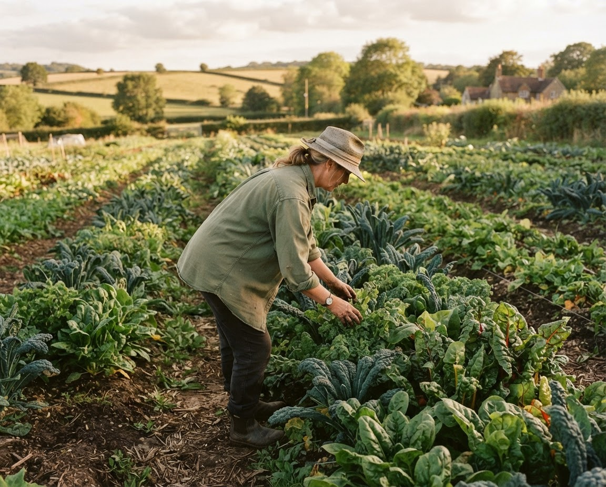
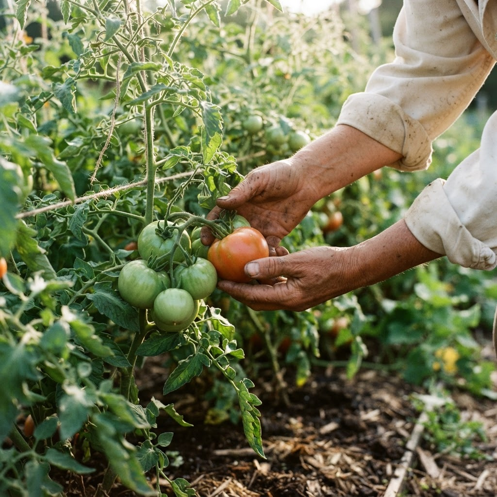
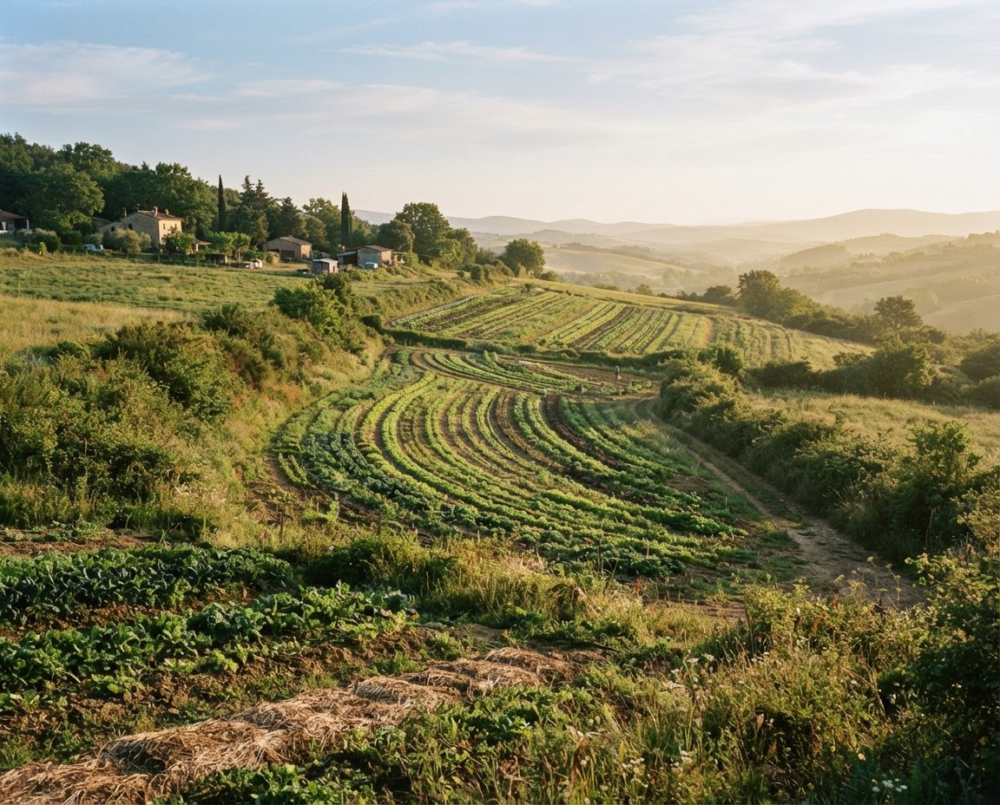

Understand your crop
Spot early signs of stress and find practical care steps for the crops you grow.
ROOTED IN YOUR EVERYDAY
Meet your farm’s everyday companion. Practical crop advice and simple planning, so you can make confident decisions from seed to harvest.
Choose a plant photo to identify it. Submitted photos are sent to OpenAI for analysis.
Your land. Your crops. A helping hand.

A little support for every growing day.
MADE FOR LIFE IN THE FIELD

Tomatoes · Before watering
Leafy greens · This week
PRACTICAL HELP. ALL SEASON LONG.
Spot early signs of stress and find practical care steps for the crops you grow.
Keep watering, feeding and field checks in one clear, manageable task list.
Map sowing windows, crop rotations and harvests around your farm.
YOUR NEXT SEASON STARTS HERE
Every farm is different. Tell us a little about yours, and turn everyday questions into a clear next step.
Simple to set up. Built around what you grow.

Your location and growing conditions
From a single plot to a full rotation
Crop care and a plan for the days ahead
YOUR FARM, YOUR PLAN
Choose what best describes your farm and we’ll shape the next steps around you.
Taking you to your growing space in 5 seconds.